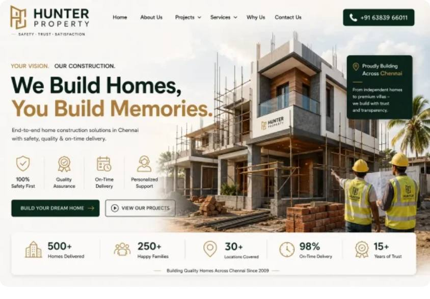
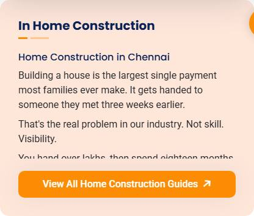
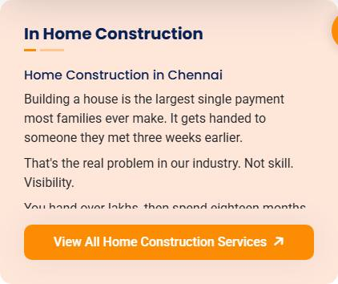
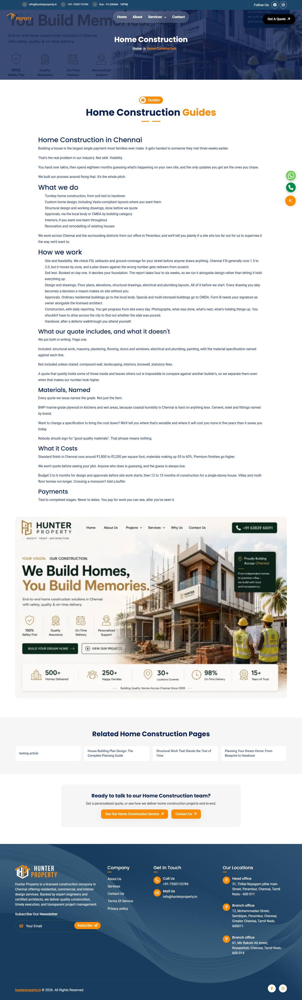
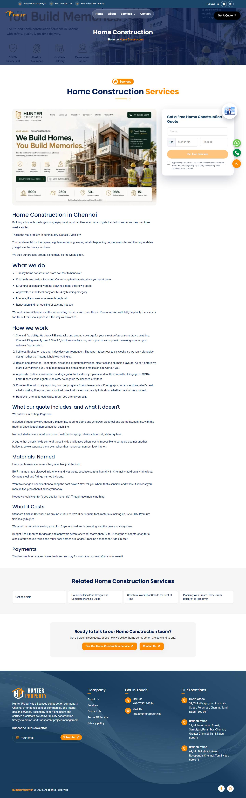
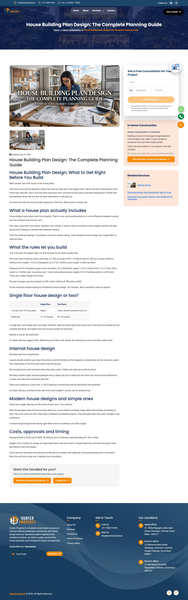

Over this period the site moved from a static Angular template to a fully CMS-driven website. A Strapi backend was built from scratch, media moved to Cloudinary, the CMS moved off Render's free tier onto a dedicated VPS, and a Pillar Page content model was added so category landing pages can be written like articles.
21 code commits, 11 pull requests, 3 hosting changes. Every figure and status in this report was verified directly against the live site, the live API or the server on 29 August — nothing here is assumed.
| Component | Where it runs | State |
|---|---|---|
| Website | Hostinger (static Angular build) | Live serving main-YBPEMJJG.js |
| Strapi CMS | VPS 93.127.167.102 → cms.hunterproperty.in |
Live pm2 strapi, commit 59e753e |
| Database | PostgreSQL on the same VPS | Live all pillar-page tables present |
| Media / images | Cloudinary CDN | Live transform URLs applied |
| Service-page blocks, placement options, EmailJS leads | Committed 16aed4c, PR #11 |
Awaiting merge then a VPS rebuild |
A second Strapi instance, bhiive-cms, shares the same VPS on port 1338. It was
left untouched throughout — verified before and after every restart (pid 18862,
restart count unchanged at 2, cms.bhiive.com responding 200).
hunterproperty_v1 (PRs #1–#3). Static
Angular site, all content hard-coded in templates.
hunterproperty.onrender.com.
uploadStream option. Mobile services menu simplified, lazy loading
added, 86 image assets optimised. SPA fallback .htaccess added for Hostinger.
Preloader rewritten to track real image loads instead of a fixed timeout.
ServiceContentService. A loading service and HTTP interceptor introduced so
the UI reflects real request state.
hunterproperty.onrender.com to
cms.hunterproperty.in on the VPS — no more cold starts. Image formats and
index.html tuned for performance. A full image/Strapi performance audit was
written up (IMAGE_STRAPI_PERFORMANCE_AUDIT.md).
Category landing pages could only ever show what the Service Content Category record held,
and that content type carries a single description field. Anything longer — sections,
an accordion, an image between two paragraphs — had nowhere to live, and editing the little that
existed meant opening the taxonomy record every other page depends on.
A new Pillar Page collection type, one record per category, linked by relation. It owns the landing page outright: tagline, H1 heading, intro, hero image, a dynamic zone of blocks, curated links, CTA copy and its own SEO component. Service Content Category was left exactly as it was, so the mega-menu, breadcrumbs and cards are unaffected — and a category with no pillar page still renders as before.
Blocks an editor can assemble: Content Section, Image Block, Banner, Quick
Links, Accordion, FAQs, Video Section. Two new CMS components were created —
blocks.image-block (image, alt text, caption, content/full width) and an
imagePosition option on blocks.content-section.
[innerHTML] binding rendered that markdown half as literal text — an editor dropped
in an image and saw  on the live site. A new rich-text service promotes it
to a real <img>, resolves upload paths against the CMS, applies the Cloudinary
width transform and lazy-loads it. Guide pages use the same service.::ng-deep rules — without them
an upload renders at its natural width and overflows.Blocks never rendered at all. An image placed in an Image Block did not
appear on the page. The cause was in the front end, not Strapi: trackBlock was
passed to *ngFor as a trackBy function, and Angular calls trackBy
functions unbound. The body referenced this.blockKey(block), so it threw
TypeError: this.blockKey is not a function on every change-detection pass and the
entire loop rendered nothing.
This affected every block type, not just images — no block of any kind would ever have appeared. It was diagnosed by driving a real browser over the DevTools Protocol against the live site: the API response contained the block all along, the component element existed but was empty, and the console was full of that error.
Raw HTML tags shown to visitors. The "In <category>" sidebar on guide
pages printed the category description using text interpolation. Because that field is rich
text, visitors saw literal <h2> and <p> tags on screen. It
now renders as HTML and is height-capped so an over-long description cannot push the rest of the
sidebar off screen.
Description and body copy were sharing one field. The category description
is what the mega-menu, cards and that sidebar display. The pillar page fell back to it whenever
its own intro was empty — which is how an entire article ended up inside a field meant for one
sentence. A pillar page now owns its copy: intro for the lead, a new
content field for the body. Only a category with no pillar page still falls back.
Also added featuredImage, rendered below the title in the flow of the page,
distinct from heroImage which sits behind the breadcrumb.
Body text was too light. Copy on pillar pages and inside blocks used
--body-text-color (#757F95), the muted grey the global body
rule sets. At article length it read as washed out. It now uses --color-dark
(#0A2155), confirmed live as rgb(10, 33, 85).
Mobile pillar pages fought back when you scrolled to the CTA. Scrolling down a pillar page on a phone, the page repeatedly jerked back upwards as you neared "Ready to talk to our <category> team", making the section effectively unreachable.
The child-guide link list was built by a getter that ran .map(), handing Angular
a brand-new object for every link on every change-detection pass. With no trackBy
on the loop, the differ treated every link as new and destroyed and rebuilt the entire list each
time. Scroll events run change detection, so this ran on every scroll frame — and the
resulting height flicker made Chrome's scroll anchoring drag the page backwards.
Measured on the live page with a phone viewport: 588 DOM mutations during one scroll (196 list items removed and re-added), and ten backward jumps of exactly −270px, leaving the page stuck at scrollY 4315 with the CTA at 4891 — unreachable.
Fixed by keying the list on the link itself rather than the object holding it, and by building the array once when the page list changes instead of on every pass. After the fix, the same test on the same page: 0 mutations, 0 jumps, and the scroll runs straight past the CTA to 5395.
Checked against hunterproperty.in on 29 August after deployment: the image block
section renders, its image loads at 762×507, intro colour is rgb(10, 33, 85), and
there are zero console errors.


<h2> and
<p> tags as visible text.
Much of this landed inside larger commits, so it does not show up as its own line in the commit list. Grouped by what a visitor actually sees.
lg. Two taps to reach a page became one.srcset/sizes and real width/height
attributes, so the browser picks an appropriately sized file and the layout stops shifting as
it loads.fetchpriority="high" on slide one,
decoding="async" on the rest.leads collection..htaccess for Hostinger (19 Aug), so deep links
like /home-construction/ resolve instead of 404ing.noIndex pages excluded.


| Phase | Dates | Where the CMS ran | Problem |
|---|---|---|---|
| Render free tier | 16–27 Aug | hunterproperty.onrender.com |
Spun down after ~15 min idle; 30–60s cold start on the next visitor |
| Keep-alive workaround | 17–18 Aug | Same, plus a scheduled GitHub Action pinging it | Treating the symptom; removed after a day |
| Dedicated VPS | 27 Aug → | cms.hunterproperty.in (93.127.167.102) |
Resolved — always warm |
/home/strapi/app, tracking hunterproperty_v1./home/strapi/app/cms on port 1337, pm2 process
strapi (id 0)./home/strapi/bhiive-cms on port 1338, pm2
id 1 — a completely separate application.cms.hunterproperty.in and cms.bhiive.com.| # | What | Result |
|---|---|---|
| 1 | Pull 9c967ae (PR #9), strapi build, restart pm2 strapi |
Created pillar_pages, pillar_pages_cmps,
components_blocks_image_blocks; added image_position column; granted
public read. All additive. |
| 2 | Pull 59e753e (PR #10), rebuild, restart |
content and featuredImage fields live. Verified via the public API. |
| 3 | Frontend zip uploaded to Hostinger | main-YBPEMJJG.js live; block rendering and colour fixes confirmed in production. |
Each restart targeted the strapi process by name — never pm2 restart all.
bhiive was checked before and after each one and never changed.
This was not written as part of the sessions above. It was already sitting
uncommitted in the working tree, builds on top of commit 7234e53, and compiles and
renders correctly against the live CMS. It has now been committed as 16aed4c and
raised as PR #11 so the repository matches the build being deployed — but it has not been
reviewed, merged or deployed. It is included in the zip accompanying this report.
24 modified files, 2 new files, roughly 800 changed lines. What it does:
| Area | Change |
|---|---|
| Guide pages | Content blocks brought to guide/service pages, matching pillar pages |
| Layout | Lead form and sidebar widgets combined into one sticky panel that travels together |
| Cover images | coverImagePosition — top, below-title, below-content, or hidden; plus a separate mobile crop and a top-level image gallery |
| Pillar pages | featuredImagePosition and contentBlocksPosition so an editor chooses where each sits |
| Lead capture | Reworked lead service with an EmailJS template (emailjs-lead-template.html); lead popup, pricing, quote and contact forms all updated |
| New service | content-block-mapper.service.ts — shared block mapping, shrinking pillar-page.service.ts by ~110 lines |
| Copy | "Guides" renamed to "Services" across the site and CMS seed data |
| Styling | styles.scss +86 lines; about and featured-guides adjustments |
This includes CMS schema changes — pillar-page,
service-content-page and lead — so deploying it requires a Strapi rebuild
and restart on the VPS, not just a frontend upload.
| Date | Commit | Summary |
|---|---|---|
| 29 Aug | 7234e53 | Fix pillar page block rendering; split description from content |
| 29 Aug | 785207e | Author pillar pages as their own CMS collection |
| 28 Aug | 1580830 | Render Quick Links blocks; category pages become pillar pages |
| 27 Aug | 6110068 | Image formats, environment URL → VPS, index.html performance |
| 23 Aug | ffad097 | Loading service and HTTP interceptor |
| 21 Aug | 05301c2 | Image handling and caching in ServiceContentService |
| 20 Aug | d66d983 | CMS content types extended with new attributes and components |
| 20 Aug | ea076f7 | Skip lazy-loaded images in preloader tracking |
| 19 Aug | 917bff5 | Hide header-top social row on mobile (was wrapping) |
| 19 Aug | 65ac94d | Show header-top contact bar on mobile; preloader tracks real images |
| 19 Aug | cd19d23 | Tie preloader to real page load instead of a fixed timeout |
| 19 Aug | 844f9b7 | SPA fallback .htaccess for Hostinger |
| 19 Aug | 5bc637f | Mobile services menu, lazy loading, 86 image assets optimised |
| 19 Aug | 7bd34f5 | Fix Cloudinary upload crash: missing uploadStream options |
| 19 Aug | 7ffd2e0 | Move media uploads to Cloudinary |
| 19 Aug | 2ae0887 | Image fields to Media Library; text fields to rich text |
| 18 Aug | 8f3c21c | Remove Strapi keep-awake workflow |
| 17 Aug | 3c3f117 | Add Strapi keep-awake workflow |
| 16 Aug | 90113eb | Point production build at Render-hosted Strapi |
| 16 Aug | 8c2321e | Stop tracking build artefacts and cache |
| 16 Aug | 3c6f15b | Add Strapi CMS backend |
1. robots.txt has an invalid sitemap line. It currently reads
Sitemap: www.hunterproperty.in/sitemap.xml. The specification requires an absolute
URL, so search engines will ignore that line and the sitemap will not be discovered from
robots.txt. It needs https:// in front. This has been flagged but deliberately left
unchanged, since it was a hand edit.
2. Category descriptions still hold full articles. The long copy currently
sits in each category's description field. It should be cut down to one or two
sentences and moved into the pillar page's content field. The sidebar cap stops it
breaking the layout in the meantime, but menus, cards and meta descriptions all read that field.
3. The uncommitted work in section 7 needs review before it is merged and deployed — it carries CMS schema changes that require a VPS rebuild and restart.